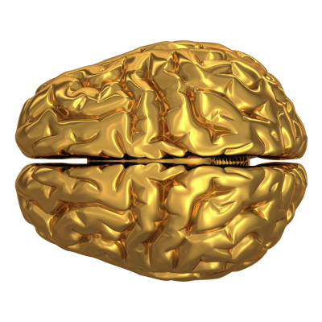

Ukratko o mozgu
Mozak (lat. encephalon) je najznačajniji deo nervnog sistema. Smešten je u lobanjskoj čauri i obavijen moždanim opnama: tvrdom, paučinastom i mekom. Težina mozga odraslog čoveka pretežno iznosi 1.350 g, ali intelektualne sposobnosti čoveka nisu srazmerne masi i veličini mozga.
